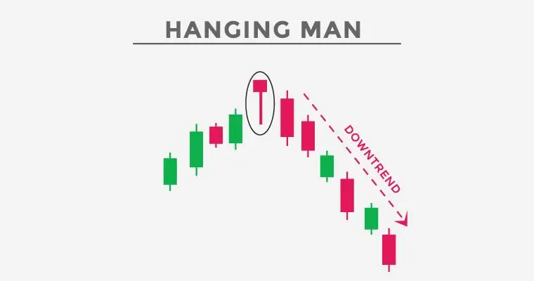

ஹேங்கிங் மேன் முறைமை ஒரு வணிக முறைமை, இது பங்குச் சந்தையில் மேலே சாய்வதை
முடித்து கீழே சாய்வதை குறிக்கும். இந்த முறைமை ஒரு தனி மொத்தக் குதிரைவண்டியால்
உருவாக்கப்படுகின்றது. இது ஒரு சிறிய மேலே நீளமான மொத்தக் குதிதிரைவண்டி, அது அதன்
மேலே திறந்த விலையின் அருகில் மூடப்படுகிறது.
ஹேங்கிங் மேன் பேட்டர்ன் ஒரு பலவீன கீழே சாய்வு சிக்னலை அளிக்கின்றது.
இந்த முறைமையை காணும்போது, பங்குச் சந்தையில் கீழே சோதனைக்கு வணிக
செய்ய முடியும்.
